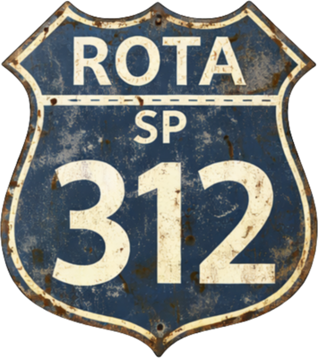
Rota SP-312 · Km 94 · Estrada Parque dos RomeirosO destino de quem vive a estrada.
Comida de verdade, música ao vivo e natureza. Sábados, domingos e feriados, em Itu.

Rota SP-312 · Km 94 · Estrada Parque dos RomeirosComida de verdade, música ao vivo e natureza. Sábados, domingos e feriados, em Itu.
Música ao vivo, boa comida e bons encontros.
Gastronomia rústica, feita para quem quer aproveitar o caminho sem pressa.
Bandejas Western Texanas à la carte, com produtos frescos e opções para todos os bolsos.
Pães, salgados e o café que abre o dia na estrada.
Carnes preparadas lentamente, no estilo de estrada.
Pratos para curtir com calma, em família ou com os amigos.
Brisket 312, Costela 94 e Pork BBQ 1922.
Espaço aberto das 8h às 17h, sujeito à programação do dia. Nos feriados, os horários são publicados na agenda.
Mais que uma parada, um destino. Natureza, motos, música e espaço para a família inteira.
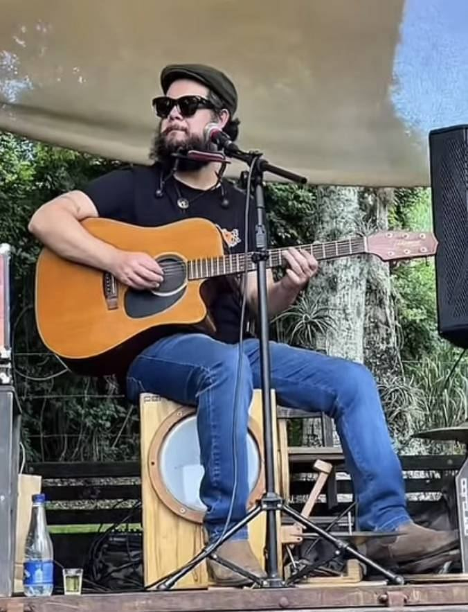
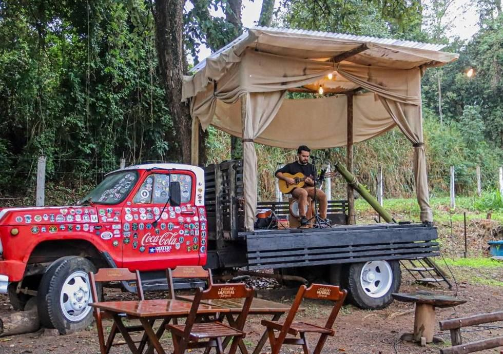
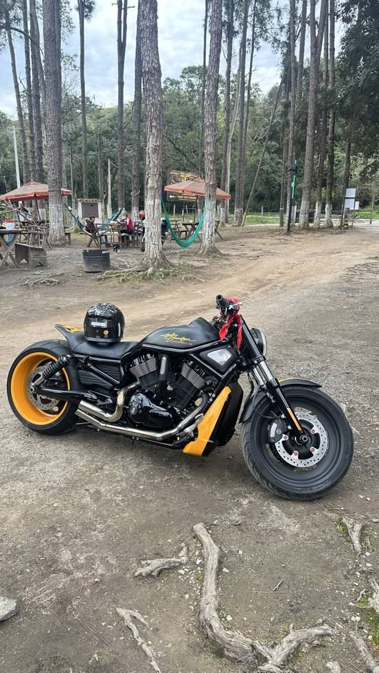
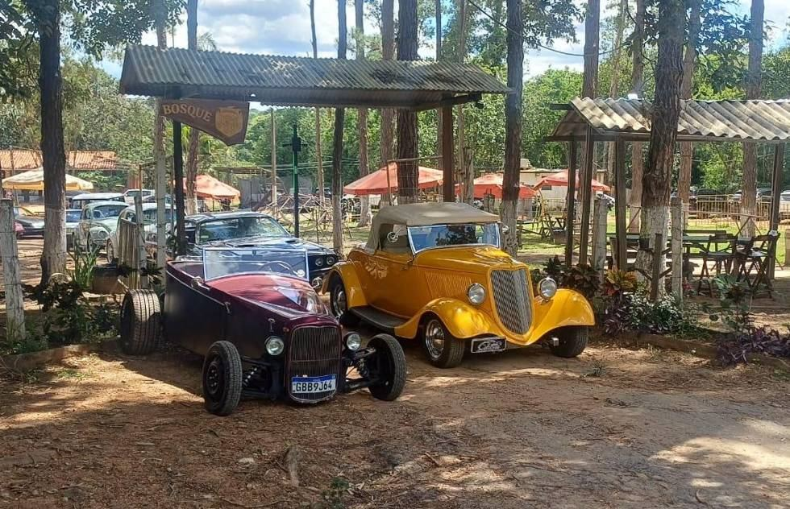
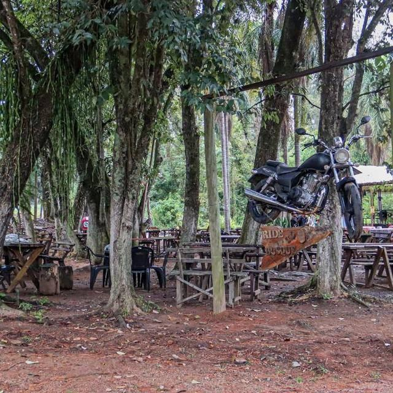
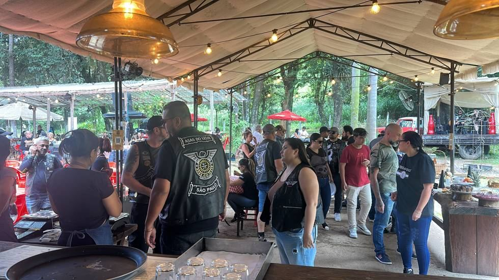
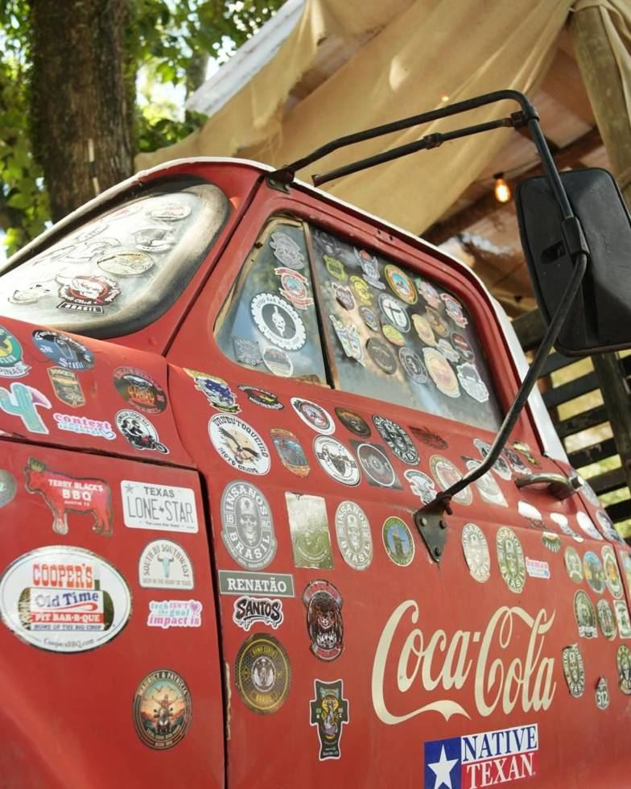
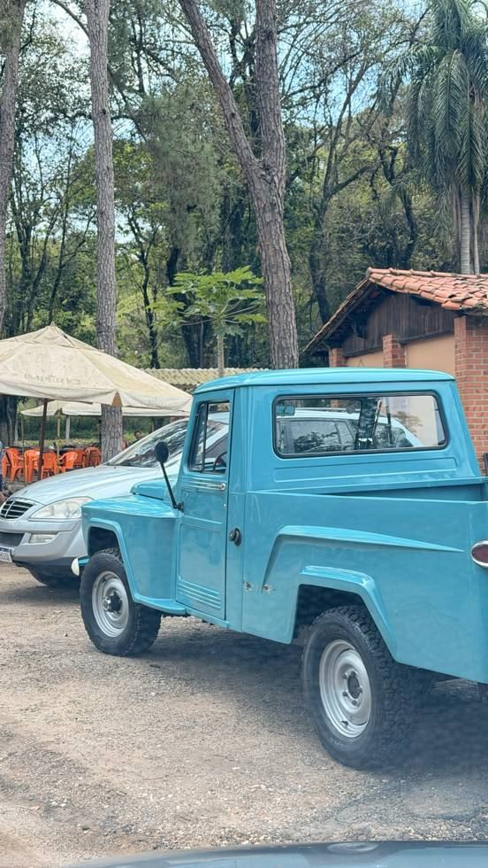
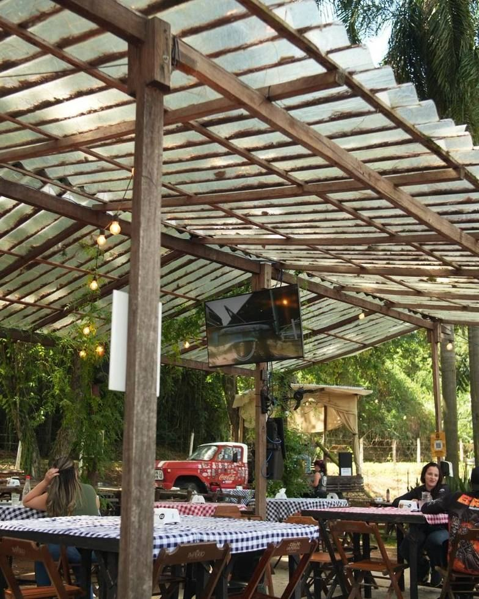
O Bosque abriu em julho de 2025 no Km 94 da Estrada Parque dos Romeiros, com uma ideia simples: a estrada não precisa ser só caminho. Pode ser o próprio passeio.
Desde então virou ponto de encontro de famílias, motociclistas, amigos e viajantes que pegam a SP-312 para tomar um café western, almoçar sem pressa, ouvir música boa e ficar mais um pouco.
Pega a estrada e vem pro Bosque!
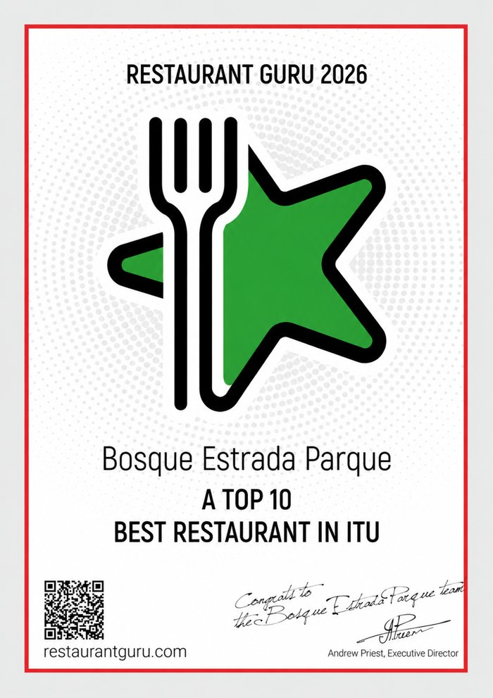
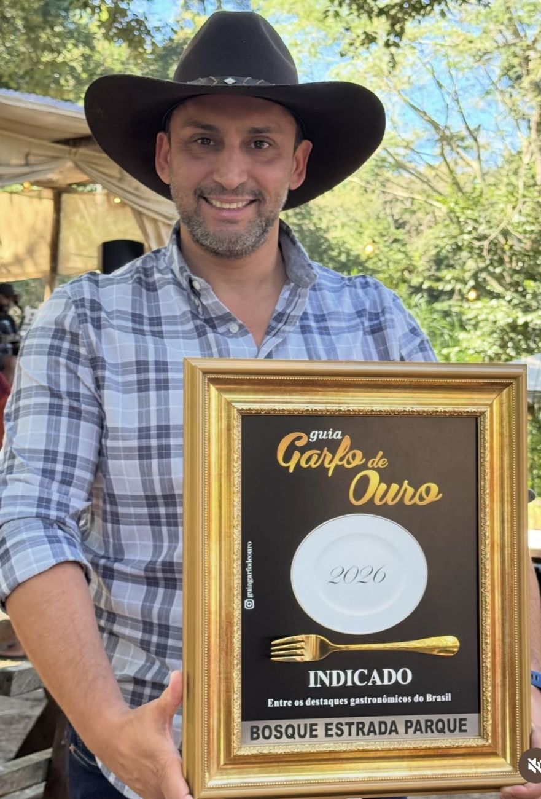
Sábados, domingos e feriados, das 8h às 17h, sujeito à programação do dia. Nos feriados, os horários saem na agenda.
Aos sábados a partir das 10h e aos domingos a partir das 8h. O almoço começa às 12h.
Não. Desde maio de 2026 servimos o Café Western Texano à la carte, com Bandejas Western. Veja opções e preços no cardápio.
Sábados, domingos e feriados costumam ter bastante movimento, principalmente no café da manhã. Para aproveitar com mais calma, chegue logo na abertura do café ou depois do almoço.
Não. A música ao vivo é por nossa conta.
O Bosque abre normalmente, mas em caso de chuva a música ao vivo poderá ser cancelada sem aviso prévio.
Sim, gratuito, com espaço para carros e motos.
Sim! Temos playground e muito espaço ao ar livre.
Muito. Para organizar um encontro, fale com a gente pelo WhatsApp.
Sim. Escreva para contato@bosqueestradaparque.com.br.